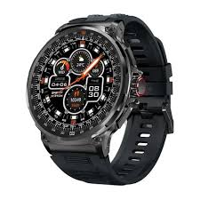

Revoluciona tu Tiempo: El Nuevo Reloj Inteligente X-Track
Descubre la última innovación en tecnología de relojes inteligentes con el Reloj Inteligente X-Track. Elegante, potente y cargado de funciones, es el compañero perfecto para tu vida activa.
Beneficios
- Monitoreo de Salud: Controla tu ritmo cardíaco, niveles de oxígeno en sangre y más.
- Seguimiento de Actividad Física: Registra tus pasos, calorías quemadas y rutinas de ejercicio.
- Notificaciones Inteligentes: Recibe mensajes, llamadas y alertas directamente en tu muñeca.
- Duración de la Batería: Batería de larga duración que te mantiene conectado durante días.
Características Técnicas
- Pantalla: AMOLED de 1.4 pulgadas 
- Resistencia al Agua: Hasta 50 metros gracias a su tecnoliga de ultima generacion dura mucho

- Conectividad: Bluetooth 5.0 y tambien mediante un cable tipo C y tambien meidante WI Fi y otros
- Compatibilidad: iOS y Android entre otros mucho dispositivos gracias a su calidad puede ser compatible
- Batería: Hasta 10 días de duración
Testimonios de Usuarios
"El X-Track ha cambiado la forma en que gestiono mi día a día. ¡Es increíble!" - Ana, 29 años.
"La precisión en el seguimiento de mis actividades es asombrosa. Lo recomiendo al 100%." - Carlos, 35 años.
¡No esperes más!
Compra tu Reloj Inteligente X-Track ahora y lleva tu vida al siguiente nivel.
Contacto
Teléfono: 78-844-2356
Email: soporte@xtrack.com